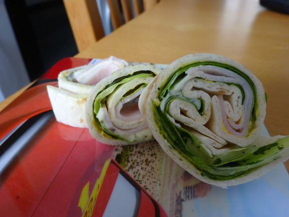

Party Wraps mit Frischkäse und Putenbrust

- Zubereitung: ca. 15 Minuten
Zutaten
- 5 Tortillas
- 10 Scheiben Putenbrust-Aufschnitt, dünn geschnitten
- 1 Beutel Salat, gewaschen, verzehrfertig
- 1 Pck. Frischkäse (India)
- Remoulade
- Ketchup
- Sambal Oelek
Zubereitung
- Die Wraps auslegen und in der Mitte dünn mit dem Frischkäse bestreichen, am Rand circa 2 cm frei lassen.
- Die Salatmischung daraufgeben. Ein wenig Remoulade auf den Salat geben. Hierauf zwei Scheiben Putenbrust legen.
- In einer Schüssel ein wenig Ketchup mit Sambal Oelek vermischen und die Putenbrustscheiben dünn damit bestreichen. Die Tortillas vorsichtig eng aufrollen.
Quelle: https://www.chefkoch.de/rezepte/1008111205922957/Party-Wraps-mit-Frischkaese-und-Putenbrust.html